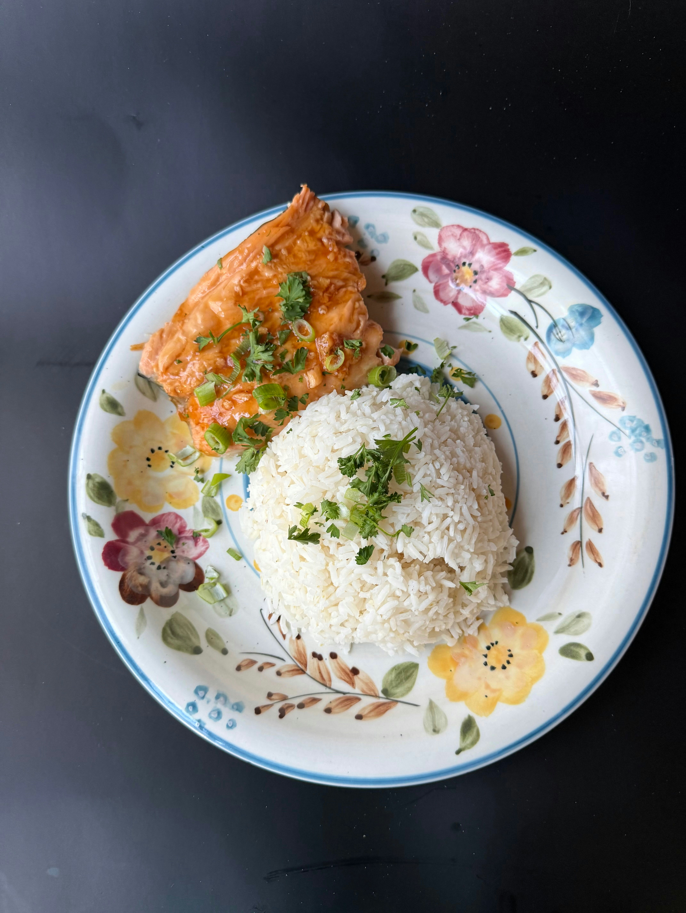

Here in Taniti you will find a variety of restaurants and stores. At this time, we have 10 restaurants in total. These restraunts showcase a few different types of food. Stores where food can be purchased are conveniently located and available to all travelers.

Restaurants:
5 of our restaurants are dedicated to featured local cuisine centered around fish and rice